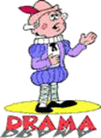

|
CLICK (gently!) on Granny's
|
 |
to close this page.
|

COMMENTS
Longer length plays are not as popular now as they used to be. From the 1950's
to the 1980's in our years of active ministry, we always involved our youth
group in the presentation of plays at their home church as well as travelling
to other churches. In the 1980's, I was a volunteer teacher of drama at a
Christian school. There was a lot of enthusiasm in producing a play. In the
1990's, several churches have presented plays from the listing below. One play
entitled ONESIMUS is a fiction/fact play and very impressive for those wishing
to do a Biblical-oriented drama. You may not wish to use the plays as written
so feel free to adapt them to suit your group.
My plays may be copied, but not published, as they are copyrighted. I do not
charge for the plays except for any photocopying, paper, and postage. Of
course, if the play goes out to you via the internet, there is no charge at
all. I am happy to make the plays available at little or no cost as part of my
ministry. I also have some short skits on various topics.
I, personally, would like to see more drama in the church program. Because
singing groups seem to have more prominence these days, many people who cannot
sing are left on the sidelines. However, drama is a wonderful outlet for
expression as well as being a blessing to the audience.
A. PLAYS APPROXIMATELY ONE HOUR IN LENGTH
Suitable for YOUTH/ADULTS - Male/Female actors
A FORTUNE LOST: A FUTURE GAINED
For young people and adults. A stirring story of a hard-hearted father who has
disowned his wife, and later on, his young son--both committed to Christ. The
son goes to India as a missionary and a great tragedy occurs because the father
back home refuses to give money to assist the needs of his missionary son and
daughter-in-law. The father's heart is eventually softened, but too late to
help his son. Based on a true story.
A NIGHT TO REMEMBER
For young people and adults. This play takes place on the mission field. Two
sacrificing young missionary couples suffer tremendously at the hands of native
terrorists, even to the stealing of a baby girl who was to be used in a
sacrifice to idols. God rewards their faith in a remarkable way and answers the
prayers of prayer warriors in the homeland.
OFFICE SCANDAL
For young people and adults. A Christian office girl, Pat, maintains a clear
and bright testimony in front of the staff. An unwanted suitor is dejected
because Pat will not date him. Pat leaves for a weekend at a Bible camp and the
unwanted suitor tries to play a mean trick on her by taking the office money
and making it seem as if Pat stole it. The trick backfires, and Pat, who gets
killed in a highway accident, has her reputation vindicated through an involved
chain of circumstances.
ONESIMUS
For young people and adults. A five-act play based on the Onesimus of the book
of Philemon. Scenes take place in the home of Philemon, with slave outcasts in
Rome, with Paul in prison. Philemon's daughter, Eunice, is in love with
Onesimus, but can do nothing else but pray for him when he runs away. There is
a surprise ending when Onesimus returns to Philemon's home.
SHE DIED TO LIVE; HE LIVED TO DIE
For young people and adults. A native of China, You-chee Lee, has won a
scholarship and been sent to North America to further his medical studies. Upon
completion of his course, he has returned to his home village in Huang Chin.
His brother, Wang Lee, has become the local communist leader for the village.
The communist leader is trying to destroy the Christians in the village and is
so devoted to his party he is willing to send even his own daughter to death.
The doctor tries to intervene and save some of the Christians who have become
condemned. The purpose of the play is to show how zealous the communists are
for their cause, and how Christians should endeavour to show the same fervour
for the cause of Christ.
THE CHALLENGE AT THE CROSS-ROADS OF SELF AND
SERVICE
For young people and adults. Mrs. Bill Watts, returned missionary from India,
relives her life as Rita Kochuk in order that her 'teen age son might know her
background and how she came to be a missionary. She tells her son, Keith, of
her drunken father, her Christian mother, her call to the mission field, and
the joy Christ has given her in spite of the many hardships and sacrifices she
has made. Keith is challenged to make a decision as to whether or not he will
give his all for Christ.
THE HAVEN OF REST
For young people and adults. A five-act play depicting the joy and peace there
is in a family when all have anchored their souls in the Haven of Rest. The
audience will laugh one minute at the timely wit and humour supplied by little
Johnny, and weep at the scenes played by Joseph, the black sheep of the family.
A physically disabled girl is the heroine of the play.
THE LAMP BURNED LOW
For young people and adults. A father of the home, a church member, has drifted
into a social drinking habit in order to prosper his business. His son finds
out through an unsaved school chum about his father's habit. The father, at
first, thinks that drinking need not be a stumbling block. The lamp of faith
burns low in the hearts of father and son, but through the grace of the Lord,
both are renewed in their vision. Six scenes.
THE SAINTLY SPIES OF SUNSET MANOR
Two young reporters disguise themselves as seniors and infiltrate a nursing
home to get first-hand reports of what goes on. Funny, yet serious. Suitable
for youth, adults, or seniors.
THE PRISONER WITH THE PREACHER'S EYES
For young people and adults. Before Rev. Kelly dies, he wills his eyes to a man
about to be released from prison. However, the convict has to sign a paper
stating he will live with the deceased minister's family for two weeks if the
eye operation is a success. Through this, it is the prayer of the minister's
family that the ex-convict would see the better things of life through the eyes
which had been bequeathed to him. Instead of staying two weeks, the ex-convict
stays only two days as he finds it intolerable to be with a "religious" family.
However, when he seeks revenge on an ex-convict buddy, exciting events happen
which change his mind.
TWO SHALL SEE THE LIGHT
For young people and adults. A poor family sacrifices time and money in order
to send their son to Dental College. While in the city, the son meets some
racketeers who exploit him for his money and he loses it all in a
"get-rich-quick" scheme. The mother of the family suffers an eye accident and
is unable to get the necessary operation because of lack of finances. As time
goes on, however, circumstances come to pass which cause the son to regain his
"spiritual" vision and his mother her "physical" vision.
UNCLE BILL'S DIARY
A wealthy Christian man dies, and his unsaved relatives are disappointed to
find out that only their son benefits from "Uncle Bill's" money, providing he
attends Bible School. The son attends Bible School and becomes a committed
Christian, and unusual events lead to the softening of the parents' hearts so
that they, too, learn to appreciate the memory of Uncle Bill and even his queer
ways.
WILL THERE BE ANY STARS IN MY CROWN?
A dramatic missionary presentation made up of various scenes from different
parts of the world, emphasizing how good we have it in this land as compared
with other countries.
TWO INTER-RELATED PLAYS - approx. one hour
It is possible to present either play without the other,
but if you wish to do a follow-up on Play #1, then Play #2 is a
sequel.
1. SOMEBODY'S CHILDREN AND HAPPY
TEARS
For young people and adults. A young minister works with underprivileged youth
in a large city. A dramatic play concerning drug addiction, converted gang
leaders, the "self-righteous" rural church which does not accept "those kinds
of converts" into the church membership.
2. 'PREACH' TAKES A WIFE
For young people and adults. Although this play is a sequel to the above, it
can be presented without having seen the other first. Preach's wife is a novice
when it comes to dealing with hard-core youth, and she encounters some
difficult experiences. Converted youth give their testimonies, and they
surprise Preach and his wife by sending them on a trip to Hawaii.
B. SHORTER PLAYS - TWENTY MINUTES TO HALF-HOUR
FOR MALE/FEMALE ACTORS
EXCHANGING OUR PROBLEMS - FOR BETTER OR
WORSE
People are dissatisfied with their lot in life, so a Judge assigns a different
life-style for them. It doesn't take long for them to find out that a different
role in life is not what they thought it would be.
FUTURISTIC CHECKUP CLINIC
Good for New Year's, a church's anniversary celebration. A spoof on detectives
trying to determine the cause - or lack thereof - of spiritual growth.
HOW TO SPEND A THOUSAND OR TWO
Three seniors discuss how to disperse a huge amount of money left by a friend.
The people who gain benefit receive the money in a most unique fashion.
(Suitable for seniors to present.)
LICORICE STICKS AND ROSES
After being in jail for ten years, a mother seeks to win the friendship of her
son. (Adaptable for special seasons.)
THE PHARISEE AND THE PUBLICAN
A modern-day pharisee and publican meet, and in a humorous skit, get their case
histories diagnosed by a medical doctor as well as prescriptions according to
need.
TREASURE IN HEAVEN
A western merchant ships his goods to India with tracts enclosed, and unique
results follow.
C. FOR WOMEN ONLY
COURTROOM CRISIS
Mrs. Gray tells the story through the object lesson of a courtroom session as
to how God dealt with her in spiritual issues.
GOD IS LOVE
Two ethnic groups - English and German - find they can get along even when
language, culture and rural and urban backgrounds meet.
GOD IS MY VISION AND LORD OF MY
HEART!
A selfish mother wants her daughter to pursue a career instead of "wasting" her
life on the mission field. There is opportunity in the middle of the play to
have your whole program included with the drama.
GOOD EXCUSES AND POOR REASONS
Some of the most common excuses given by ladies for not attending the Women's
Society are brought out in this light-hearted play.
THE VOICE OF THE WOMEN
A missionary pageant which can be colourful with costumes of different
countries.
PICTORIAL HANDS PRESENTATION
Using visual aids, different types of hands are presented: praying hands,
seeking hands, sin-snared hands, healing hands, etc.
PRAYER NETWORKING
How ladies' prayer chains may work effectively. Based on the true story of a
youth pastor's daughter who was abducted and returned safely.
SHARE YOUR BLESSINGS
Written for those who use an offering box in their home in which they place
donations when they have special praise for the many blessings experienced.
Much information in this skit could be adapted for a missionary program idea.
THE DESERT SHALL BLOOM
A mistake in presenting a bouquet of flowers produces some interesting results
in the outlook of the Women's Society.
THE DOORS TO COMMUNITY SPIRIT IN MODERN
LIVING
Written for the World Day of Prayer, the different sections feature: The Door
of Entry; The Doors of the Arts and Sports; the Door of Politics; the Door of
Healing Ministries; Open Doors to Homes and Hospitality; the Door of
Witnessing. Contains a wealth of good material for a ladies' program.
THE KEY TO THE HANDCUFFS
The ladies are challenged to forego the operational needs of the church for a
more serious priority - the needs of lepers.
THE VOICE OF THE WOMEN
A missionary pageant involving many aspects of outreach. Parts of the pageant
may have to be changed to suit your particular local situation.
TRUE GREATNESS
A dream about "measuring up" to spiritual expectations in heaven is the base
for this serious play, which is short and only one act.
D. CHILDREN'S PLAYS
THE WHOLE ARMOUR OF GOD
Dressed in various parts of the Christian armour, the "well-dressed" Christian
cannot be defeated by Satan.
HIS MAJESTY'S GOOD SHIP ZION
Follows a nautical theme regarding our voyage on the sea of life.
THE PROFESSOR VISITS BIBLE SCHOOL
Reading, Writing and Arithmetic are examined by Professor Katzenbacher, and the
class responds perfectly each time with various choruses such as Numerical
Chorus, Alphabet Chorus, Bible Map Song, etc.
THE MISSIONARY BICYCLE
A physically disabled boy wonders what to with a bicycle he has won.
A THIEF AND A SCHOLARSHIP
Money is stolen, but a Christian schoolmate offers to take the thief's
punishment.
THE MISSIONARY OFFERING
Children of different countries make an appeal for good stewardship.
E. SEASONAL PLAYS
CHRISTMAS
A CHRISTMAS STORY (Christmas)
A short two-page skit for children, centred around the shepherds in
Bethlehem.
A HALF POLISH CHRISTMAS (Christmas)
A Polish custom helps the family to resolve its differences. (Any age)
A MISTAKE WHICH CAME OUT RIGHT
(Christmas)
Based on a true story of a Chinese orphan girl who asked for 288 presents for
Christmas. (Children and adults)
A MODERN CHRISTMAS CAROL (Christmas)
Sam Grumpett could not cope with the tragic disaster of the loss of his wife.
Old memories of the real meaning of Christmas haunt him. Finally, like Scrooge
of old, he relents and finds peace. (Children/youth/adults)
CHRISTMAS IS A MIRACLE (Christmas)
A great story which interweaves John 3:16 throughout the drama of an inner city
street kid finding love and joy at Christmas. (Children/youth/adults)
GOD'S TREES (Christmas)
The trees of the forest want to be famous and do not realize they are being
selected for use by the Master. (Children; youth)
TO BE RICH (Christmas)
When the father of the home loses his job, how can the selfish wishes of his
family be dealt with? The family learns together that it doesn't take money to
make Christmas a meaningful celebration.
MOTHER'S DAY
FLOWERS (Mother's Day)
Two short skits: "Don't Say it With Flowers" and "Say it With Flowers"
THAT OLD-FASHIONED MOTHER OF MINE (good for Mother's
Day or Graduation)
A young "mod" mother and an old-fashioned mother meet through their sons who
attend the same
THROUGH THE VALLEY OF THE SHADOW OF DEATH (Mother's
Day)
A mother is told she has only three months to live; adaptable for special
seasons such as Mother's Day, Christmas
EASTER
THE MEANING OF EASTER (Easter)
Visual aids bring out many thoughts connected with Easter: money, thorns, robe,
cross, hand, glass, tomb, heaven (Any age)
THANKSGIVING
SING & SMILE & PRAY
Based on the song of that name. How adverse circumstances can bring blessings.
(Youth)
WHY SHOULD I BE THANKFUL?
Various "blessings" chide a downhearted farmer for his lack of thankfulness.
(Children)
|
CLICK (gently!) on Granny's
|
|
to close this page.
|